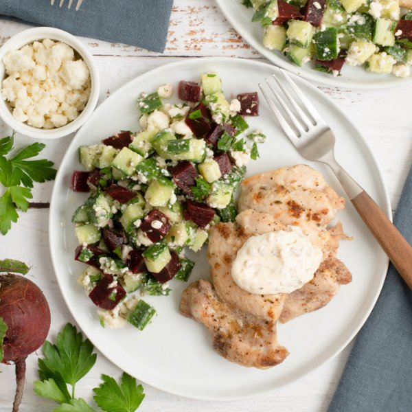

Roast Chicken Thighs with Oregano Aioli & Beet-Cucumber Salad

Total Time
35 min
Nutrition (per serving)
671.8 kcalCalories
51.4 gProtein
14.6 gCarbs
45.2 gFat
Full nutrition table
| Calories | 671.8 kcal |
| Total fat | 45.2 g |
| Saturated fat | 11.4 g |
| Trans fat | 0.5 g |
| Cholesterol | 256.6 mg |
| Sodium | 611.8 mg |
| Carbohydrates | 14.6 g |
| Fiber | 4.1 g |
| Sugars | 8.6 g |
| Protein | 51.4 g |
| Potassium | 1041.9 mg |
| Calcium | 209.4 mg |
| Iron | 4.3 mg |
| Vitamin A | 307.9 IU |
| Vitamin C | 27.4 mg |
| Vitamin D | 10.5 IU |
Cookware
Ingredients
- 4 mediumbeets
- 2 lbchicken thighs, boneless skinless
- 1 (4 oz) pkgcrumbled feta cheese
- 1English cucumber
- 2 clovesgarlic
- 1 small bunchItalian (flat-leaf) parsley
- black pepper
- extra virgin olive oil
- mayonnaise
- oregano, dried
- red wine vinegar
- salt
Steps
- Preheat the oven to 450°F.
- Wash and dry the fresh produce.4 medium beets
1 English cucumber
1 small bunch Italian (flat-leaf) parsley - Peel, trim, and medium dice beets; place in a medium saucepan and cover with hot water (from the tap). Cover and bring to a boil over high heat.
- Meanwhile, peel and mince garlic; place in a small bowl along with mayo and spices. Stir to combine the aioli.2 cloves garlic
½ cup mayonnaise
2 tsp oregano, dried
½ tsp salt
¼ tsp black pepper - Once the water in the saucepan is boiling, reduce to a simmer and cook until beets are fork-tender, 12-14 minutes.
- While the beets are cooking, pat chicken dry with paper towels and transfer to a baking sheet pan. Remove half of the aioli and divide between the chicken, spreading evenly over each thigh; season with salt and pepper. (Reserve remaining aioli for serving.)2 lb chicken thighs, boneless skinless
½ tsp salt
¼ tsp black pepper - Place baking sheet in the oven (it doesn't have to be fully heated) and roast until chicken is cooked through, 18-20 minutes. Remove from oven.
- Meanwhile, place oil, vinegar, and spices in a medium bowl; whisk to combine the dressing.2 tbsp extra virgin olive oil
2 tbsp red wine vinegar
½ tsp oregano, dried
½ tsp salt
⅛ tsp black pepper - Shave parsley leaves off the stems; discard stems and mince the leaves. Add to the bowl with the dressing.
- Trim and medium dice cucumber; add to the bowl and set aside.
- When the beets are done, drain and run under cold water to cool; set aside to drain further.
- Just before serving, add beets and feta to the bowl with the dressing; stir to combine the salad.1 (4 oz) pkg crumbled feta cheese
- To serve, divide chicken and salad between plates; top chicken with reserved aioli. Enjoy!